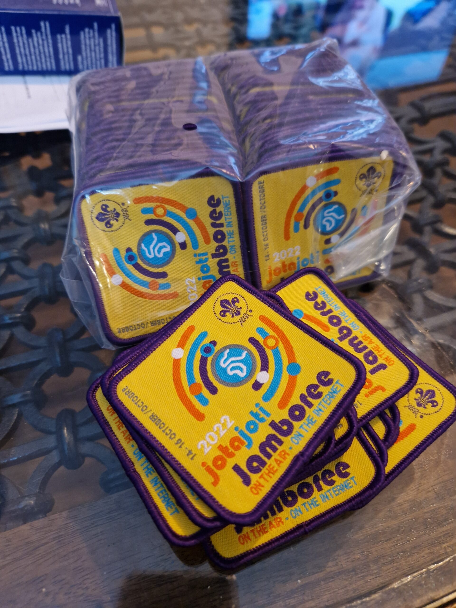
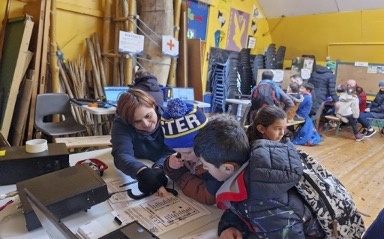
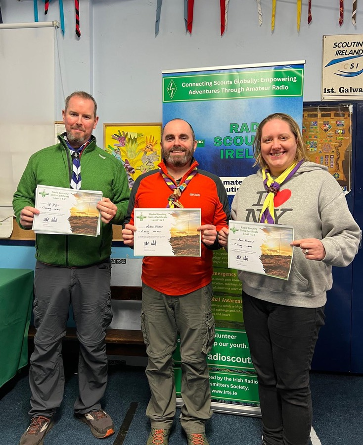
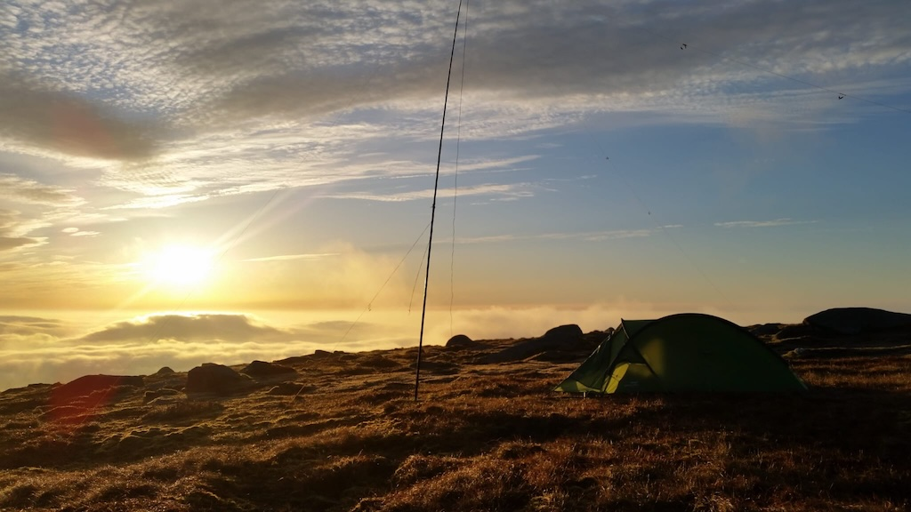

Jamboree on the Air-Jamboree on the Internet is the largest annual scouting and guiding event in the world!
Up to a million or more scouts and guides around the world take to the airwaves and internet for a virtual Jamboree of culture and exploration.
It all started in 1957 when a group of Scout Leaders who were also licensed radio amateurs, had the idea following their experience with a large station at the 9th World Scout Jamboree in Sutton Park. Every year since over a million scouts take to the airwaves and in more recent years internet!

We have developed a comprehensive graduated 9 stage Radio Scouting skills program suitable for the youngest to the oldest along with badges for each stage as well as special interest badges and resources to help scouters implement radio and technology related programs.
Details on the program are found on our resources page here.
We highly recommend that scouters and scouts who are interested in ham radio & radio scouting join the Irish Radio Transmitters Society and the National Shortwave Listeners club and pursue training to get a license.

RSI provides a one day training course for scout and guide leaders to enable them to bring scouts and guides through Stage 1 and Stage 2 of the Radio Scouting skills program. We also provide a one day stage 3 leader training course. Working towards Level 4 and up involve self study and external courses run by the National Shortwave Listeners club, OARC, Essex Ham among others.
RSI has the capacity to support a limited number of national camps and national and international Jamborees with fun bases and IST.
We can also facilitate connecting scout and guide groups with a local amateur radio clubs to facilitate an activity night or participation in JOTA-JOTI.
Check out the resources page for ideas!
We are a group of Scouters and Amateur radio enthusiasts who aim to support scout and guide leaders to bring the highest standards of Amateur Radio, Science, Technology, Engineering and Mathematics (STEM) activities in a fun and interesting way to the scout groups, guide groups and youth groups of Ireland and Europe in a safe and fun environment for youth members and leaders.

Have any questions? Drop over to our facebook page and say Hello!
Visit our Facebook Page